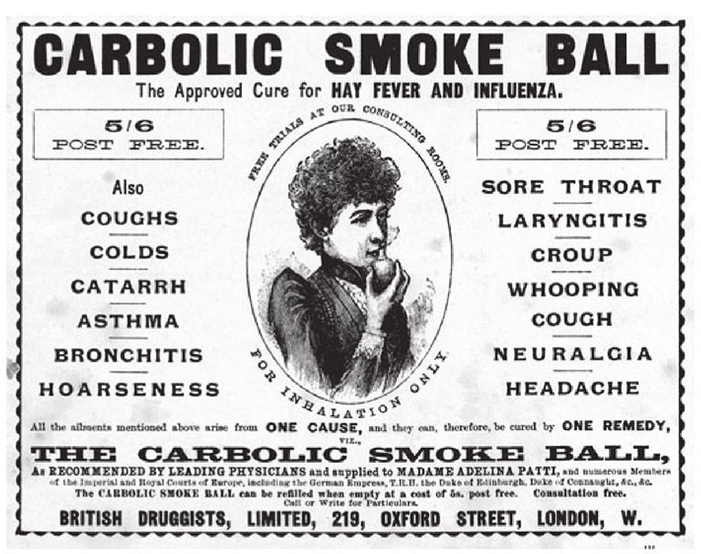
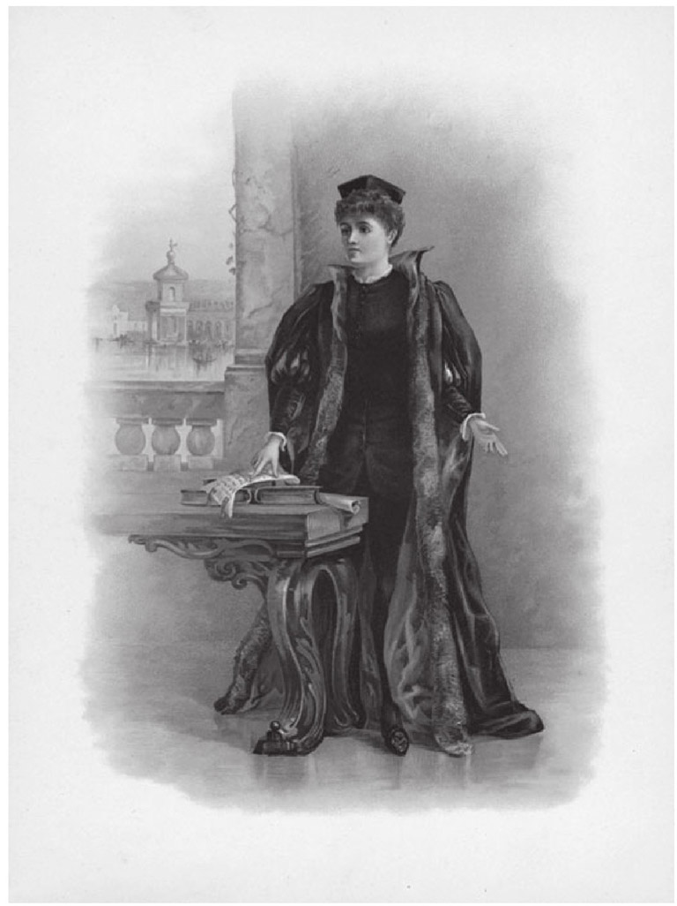

法律丰富的分支永远在繁殖增长。当社会生活在不断变化的时候，法律很少会落后一大截——法律会发明和规定新的概念和规则，并解决不可避免会发生的纠纷。因此，我们勇敢的法律新世界在不断地开疆辟土：空间法、体育法、性法。但是，作为绝大多数法律体系核心的基本部门法，可以回溯到法律的根基：合同法、侵权法、刑法和物权法。这个原子核的周围必须围绕着一系列部门法，包括宪法和行政法、家庭法、国际公法和国际私法、环境法、公司法、商法、证据法、继承法、保险法、劳动法、知识产权法、税法、证券法、银行法、海商法、福利法、人权法等等。为了便于刑事审判、民事审判以及其他实务的操作（比如转让土地、起草遗嘱），人们发展了复杂的程序规则，由此产生了新的次级部门法。
公法与私法
公法与私法之间的界限非常重要，对于欧洲的大陆法系国家以及它们的前殖民地来说尤为如此。尽管对于怎么划分以及从何处划分这一界限并没有达成共识，但是一般而言，公法管辖的是公民与国家之间的关系，而私法则关注社会中的个人或者群体之间的关系。因此，宪法和行政法是典型的公法，而合同法是私法的众多部门之一。刑法因为主要涉及国家对于罪犯的指控，也同样处于公法的保护伞下（这三个部门法在下文中均会述及）。然而，当国家越来越多地侵入我们的生活时，公法与私法之间的界限也会更加模糊。
合同
协议是社会生活必不可少的元素。当你同意和我一起喝一杯，向我借本书，或者让我搭车上班时，我们就已经缔结了一份协议。但是法律不会强制你出现在酒吧里，不会强制你还书给我，或者强制你让我搭车。违反这些社交安排也许会带来相当的不便、烦恼，甚至开销，但是绝大多数法律制度都能够理解这种违约。
自由社会的基本特征之一是它给予成员自治的权力，只要他们不伤害别人，他们就可以通过自由选择达成交易。合同自由也可以通过功利主义的立场来捍卫：通过执行遵循市场定价机制的合同，资源——货物与服务——可以被出价最高的人买走。有观点认为，这会让稀缺的资源得到平均分配。
自由市场的拥护者认为，个人是他自身福祉的最佳判断者。在19世纪（特别是在英格兰），在追求工商业界的首要价值的过程中，合同法因为能促进交易关系最优化，已经发展到了相当复杂的程度（有人认为已经到了神秘化的地步）。当然，没有合同法规制的商业是无法想象的，但是在任何社会里，合同双方在讨价还价能力上的不平等都难以避免。理论上说，在我和电力公司订立的家用供电合同中，合同双方都处于平等的基础上。但是事情并不是这么简单。我几乎不可能对合同条款讨价还价，那是一份冷酷无情的格式合同。这是一场力量悬殊的对抗。因此，法律通过消费者权益立法和其他机构设置对这种“不公平条款”进行了调节，试图重新平衡双方的利益。比如法院有权依法拒绝承认不合理的条款，并且只执行那些“合理的”条款。
为了缔结一份有约束力的 合同，法律通常会要求协议双方确实具有创设法律关系的意图 。违反承诺几乎一直被认为是不道德的，但是只有在满足特定条件的时候，它才会产生法律上的后果；尽管在某些大陆法系国家（比如法国、德国和荷兰），个人可能会因为不诚信的协商而承担法律责任，即使这时候对方还没有接受他的要约。
理论上，普通法将协议分成两部分：一是一方发出的要约，二是另一方对该要约的承诺。要约人通过发出要约表明——以语句、言辞、传真、电子邮件，或者甚至作出行为等形式——要约一旦被要约的受送达人（受要约人）所接受，要约人就随时准备受合同约束。举例来说，亚当广而告之，要以1000美元出售他的车，夏娃则出价600美元。亚当回复她，他可以接受700美元的报价。这是个反要约，夏娃完全有接受或者拒绝的自由。如果她接受了，协议就会达成；如果同时满足了其他的法定要求，这就是个有约束力的合同。这一分析有助于判断协议是否确实成立，但这种分析方法相当机械，经常很难据此判断到底谁是要约人，谁是受要约人。实践中，最终的协议也许要经历冗长的磋商，而且涉及双方之间无数的提议与反提议。仅仅将这一过程描述为要约和承诺，则不现实了。
数百个案例都在和不能完美地符合要约和承诺模式的事实情况作斗争。还有一个不断产生的难题是，要约人要在多大程度上受到要约的约束。普通法规定，在你对我的要约作出承诺之前，我都有撤销它的自由。而德国、瑞士、希腊、奥地利和葡萄牙的法律则有相反的规定。它们规定，我必须受到自己发出的要约的约束，不能不受惩罚地撤销它。它们声称撤销要约没有任何法律效力。法国和意大利的法律采取了一条中间路线。意大利民法典规定，在特定的承诺期限届满之前，要约人不能撤销要约。如果要约中没有规定承诺期限，那么在受要约人作出承诺之前，要约可以撤销。但是如果受要约人出于诚信已经信赖了该要约，那么他可以要求要约人赔偿自己因为进行交易准备而受到的损失。
普通法不仅要求严肃的、愿意接受法律约束的意图，而且还要求“对价”，这一概念在大陆法系中是没有的。对价是协议的利益因素：各方都希望从中得到些什么，否则他们就不会缔结协议了。这些因素在1892年的卡利尔诉卡布利克鼻烟球公司一案中得到了阐述。卡布利克鼻烟球公司为它的产品做了广告——该公司声称其生产的鼻烟球可以防止使用者感染流感。该公司承诺，如果有人在使用过后得了流感，那么它会向这个人支付100英镑。广告中有以下陈述：
卡利尔夫人出于对该许诺的信赖，购买了一个鼻烟球，并根据说明书的指示加以使用。但是她仍然得了流感。卡布利克公司宣称，在它和卡利尔夫人之间并不存在可强制执行的合同——她并没有通知公司她对这一要约作出了承诺。该公司还认为，这里也不存在任何对价，因为公司在售出鼻烟球之后，也不会从购买者的使用中再获得任何利益。这两个抗辩都被法院驳回了。法院认为，在卡布利克公司和任何见到该广告并据以行动的人之间，广告构成了一项单务合同的要约（通常情况下，合同是双务的，涉及在双方之间交换承诺）。在这个案件里，卡利尔夫人满足了这些条件，所以她有权要求强制执行这个合同。告知卡布利克公司她已经使用了这个鼻烟球构成了承诺的一部分；而且，卡布利克公司在银行中存了1000英镑“以表诚意”，这也表明该公司明确地作出了一个严肃的要约。关于对价，法院认为，相对于公司答应给她100英镑的承诺，卡利尔夫人的行为已经构成了对价。

图4 尽管该公司作出了承诺，但卡利尔夫人在购买了该公司生产的鼻烟球并根据说明书加以使用之后，仍然得了流感。这个19世纪的传奇性的英国案例确立了形成有效合同的基本条件。
举例来说，我同意把我的车卖给你；我有权获得购车的款项，而你则获得车辆的所有权。如果我无视与你缔结的协议，而将车卖给别人，你就可以依法获得救济——因为你依赖于我遵守约定。这就是大家所知道的违约，下文中将会对此加以讨论。
在对待合同的基本方法上，毫无疑问，两大主要法系之间存在着分歧。普通法系通常被视为是实用主义的、商业性的；而大陆法系则更注重道德因素。但是，我们依然可以看到，两大法系都或多或少地接受了某些基本原则。
社交约定经常是不具备约束力的。正如上文所描述的那样，我们“一起喝一杯”的约定，不具备必不可少的、准备受法律约束的意图。对于去那家“你答应会在那里等我”的酒吧而发生的交通费用，法院是不会支持的。普通法同时规定，正如我们所知，为了回报一项承诺，被承诺人同样必须付出“对价”。但是，这有可能导致荒谬的或者不公正的结果。比如，在一个著名的英国案例中，两名水手突然跳槽了。船长没有办法找到替代他们的人，因此，他许诺给其余水手们更多的钱，但是他食言了。水手们要求获得额外薪水的诉请以失败而告终，因为他们的合同早就约定他们要在船上承担额外的工作。就船长加薪的承诺来说，他们没有支付新的对价来作为回报。但是，法院开始发明各种各样的技术手段来避免这样的不公，尤其是美国法院。
合同的缔约方还必须有能力来签署合同。尽管细节有所区别，但是所有的法律制度都对其成员缔结合同关系的能力程度作出了控制；特别的是，年轻人（未成年人）或者那些因为精神问题或者其他原因而导致心智受损的人，通常会被认为没有能力缔结合同。
与流行的说法相反，合同并不都需要以书面形式订立。除了某些特定的合同（土地买卖是最明显的例子）之外，合同并不需要特定的形式来约束它的当事人。口头合同和书面合同一样具有约束力，只不过正如我们所知，普通法要求有证据证明用以回报承诺的对价。但是，以保护消费者为名义的、日益滋长的政府家长作风使得正式合同的数量有所上升，比如通过立法要求合同应当具备书面形式，或者是更为常见的印刷合同形式。
有些“合同”是无效的，因为它们违反了“公共政策”。尽管有着合同自由原则，法律不会支持那些旨在利用法律来获得不道德的或者不合法的目标的合同。这些合同很可能会被法院认定为无效。但是社会习俗很少一成不变，一个世纪之前人们觉得不道德的事，在当今社会的宽容环境下可能显得平淡无奇。比如，德国法院曾经会依惯例认定把房子用作妓院的租赁合同无效。
错误、虚假陈述或者胁迫 [1] 同样可以导致合同无效。这是因为事实上并不存在真正的合同。在特定情况下，比如在存在错误、虚假陈述、胁迫或者不当影响的情形时，法律可以允许我宣布合同无效。比如，如果我对合同的标的存在错误理解（我以为我在买一辆法拉利，而你事实上只是在出售一辆福特），或者你误将福特当成了法拉利，或者你逼迫我进行交易，我都能够以此作为你要求我履行合同义务的抗辩。如果我能够证明欺诈性错误陈述 [2] 的存在，那么合同可能无效。
法院可能会判决赔偿因违约造成的损失。如果我没有履行合同项下的义务，你可以起诉我，要求我赔偿损失，或者在某些特定情况下，要求我强制履行合同义务。但是，如果我能够证明客观情况已经使得实际履行变得不可能，或者合同目的已经落空，我也许可以免于承担违约责任。我们假设，我将我的度假别墅租给你一个星期。你来到了别墅门前，但是我拒绝你入内。我显然违反了我们的合同，而且你希望获得赔偿。但是赔偿多少呢？法律应当试图让你恢复到合同签订之前的状态，还是应当争取让你达到合同实际履行后的状态？或者法律只是要求我返还从你那里拿走的、旨在确保成功预订的定金？如果我因为风暴让供电变得不安全而拒绝你进入度假别墅呢？如果风暴在一个月前发生，又或者仅仅在一天前发生，这两者会有区别吗？
在所有的主要法律制度中，这些棘手的问题都引发了大量错综复杂的司法分析。解决方法有所区别，有时甚至存在重大区别；但是典型的是，如果一方的违约完全超出了他能够控制的范围——自然灾害是最好的例子——那么他可以免于履行合同义务。
侵权
侵权行为（或者大陆法系所称的delicts），是民法上的不当行为，它们包括对我的人身、财产、名誉、隐私甚至我内心的宁静造成的损害。就像合同法一样，侵权法规定，受害人（或者原告）享有就其遭受的损失获得赔偿的权利。但与合同法不同的是，合同法的主要目标在于有诺必守，而侵权法保护的利益则更加广泛。对基于故意或者过失而造成损害的行为，法律规定了先发性和赔偿性的救济方式；而对基于过失而造成损害的行为进行规制，则成为了现代侵权法的首要焦点。意外可能会发生，但是如果它是由你的过失所导致的后果，那么我有可能获得赔偿，以弥补我的损失。所以，如果你的车撞了我，而且我能够证明你驾驶时有过失，那么我就可能获得相应的赔偿，以弥补我的医疗费用、误工损失，以及因为疼痛和折磨所受到的精神损害。
为了胜诉，原告通常需要证明这一不当行为是出于故意或者过失。绝大多数侵权行为只有在它们造成了实际伤害或损害时，才是可诉的；但是也有一些特定的侵权行为（比如侵害之诉），法律对它们进行规制的主要目的是为了保护权利，而不是赔偿损失。这些侵权行为即使没有实际损害证据，也是可诉的。被告（在普通法系中又称为侵权行为人）通常是负主要责任的人，但是根据替代责任规则，一个人（比如雇主）可能会对另外一个人（比如雇员）实施的侵权行为承担责任。
有时候，侵权行为会与违约行为重合。比如，一位粗心大意的公共汽车司机给他的乘客造成了损害，这位司机就是同时实施了过失侵权行为和违约行为（违反了将乘客安全送达目的地的合同）。乘客可以以侵权和/或违约主张损害赔偿。公共汽车司机还可能实施了犯罪行为（比如危险驾驶）。
对于财产权和人身安全的保护是较为直接的，但是当需要赔偿的受害者遭受的并非实际损害，而是纯粹经济损害或者精神损害时，很多法域的法院都会遇到困难。我们假设，正如在某个已经发生的英国案件中那样，被告在原告工厂附近进行建筑工作时出于过失损坏了电缆；结果是原告的生产遭受了严重的破坏，原告蒙受了经济损失。实际损害（对材料的损坏）可以很明确地得到补偿，但是因为电缆并非原告的财产，所以原告的损害是“纯粹经济损害”。他能够要求赔偿吗？在经历了英国法院制造的一系列波折之后，普通法的回答是“不能” [3] 。法院似乎是害怕，如果允许上述赔偿，那么诉讼将会像洪水一样涌入法院；尤其是在英国，法官们常常对此表示担忧。在法国，情况则恰恰相反，在实际损害和经济损害之间并没有明显的界限。
对于处理精神痛苦的问题，司法存在着类似的忧虑。当伤害包括人身损害及因此造成的精神疾病时，法院在原告与受害人之间寻求着一定程度的“接近性”。这种计算的复杂程度，在1992年上议院的一项判决中有着悲剧性的阐明。某座体育场的坍塌导致了95名球迷的死亡和400余人受伤，警察承认他们有过失，他们允许太多观众进入已经很拥挤的场地。这场比赛是进行现场直播的，结果这场灾难的现场影像也同样被转播出去。有些原告看到了这些令人不安的影像，他们知道他们的亲友在体育馆现场观赛。两名原告是现场观众，但是他们不在灾难发生的看台上，其他的原告是从电视或者广播直播中知道这场灾难的。所有的原告在这场灾难中都失去了或者害怕将会失去一名亲戚或朋友。他们没有获得精神损害赔偿，因为他们没有能够满足法律规定的一个或多个控制机制；它们正是适用于那些没有直接受到事故影响，仅仅是通过所见所闻知晓事故，但却要求获得精神损害赔偿的原告。这些限制因素是：
这种“接近性”就像其他标准一样，一直饱受批评；在某些法域中，它还激起了要求对法律进行改革的呼声。而且，如果伤害并不足以被确认为精神疾病，但却饱含因失去所爱之人或者因所爱之人受到伤害而产生的悲痛与痛苦，问题也会产生。
侵权法不仅旨在赔偿受害者，它的目的还在于阻却人们从事那些可能会伤害别人的行为。而且，它还旨在“转移”或者“分配”过失侵权中产生的损失。简单来说，如果你的过错使我受伤，那么法律就会将损失转移给你。我为什么要承担你的过失所导致的损失呢？你会立刻看到，这个似乎很简单的问题背后，隐藏着关于过失的本质属性的一系列难题：什么是“过错”？什么构成了“原因”？如此等等。在当今这个被保险统治着的世界里，这个问题逐渐由谴责变成了责任承担；从“是谁的过错”变成了“谁承担费用最合适”。而这一问题的答案经常是“保险公司”，保险公司要受到强制责任保险政策的约束。
普通法的侵权体系由丰富的错误行为所组成，包括侵入他人土地、侵犯他人人身（包括企图伤害他人与殴打他人）、妨害、诽谤、违反法定义务和严格责任。但是就像我们所提及的那样，在实践中，建立在过错归责原则基础上的过失侵权，让这些行为黯然失色。原告必须证明，被告对他负有注意义务 ，而被告没有达到“理性人” 标准，从而违反了这一义务，并造成了 对原告人身或财产的损害。
这三个因素中的每一个都需要进行简明扼要的解释。“注意义务”在普通法系最著名的司法判决之一中得到了生动的阐释。在多诺诉史蒂文森这个标志性案例中，多诺夫人抱怨，她在姜汁啤酒瓶中发现了一只蜗牛；但是比起这件事来，判决结果要重要得多。该案的事实从来没有得到准确的查明，但大致案情是：多诺夫人与她的朋友一起去苏格兰佩斯利市的咖啡馆。她的朋友要了饮料。咖啡馆老板将一个姜汁啤酒瓶中的液体倒进了一个放着冰淇淋的杯子里。多诺夫人喝了一点上述液体。她的朋友拿起瓶子，将剩余的姜汁啤酒倒进杯子里。据称一只已经腐烂的蜗牛顺着瓶口流进了杯子。多诺夫人此后抱怨说自己胃痛，她的医生诊断她患上了肠胃炎。多诺夫人同样诉称，因为这一事故，她一直饱受痛苦情绪的折磨。当时的侵权法并不允许她起诉咖啡馆老板。但是，上议院判决，对于处于多诺夫人地位的原告，史蒂文森这样的姜汁啤酒生产者负有注意义务。亚特金法官引用了《圣经》中人有义务爱他的邻居的训诫，作出了他著名的论断：
换言之，对于那些你能够预见到可能因你的行为而受到损害的人，你负有一定的义务。
因此，这一注意标准是客观 标准：评判标准是“理性人”。例如，一个英国法庭认为，学员司机注意义务的标准，应当和其他任何一位机动车辆驾驶者相同。最后，被告必须实际导致了原告的损失。长期以来，因果关系问题让许多普通法系法官大费脑筋；在法院认定什么才是公平的或者什么才是符合社会最佳利益的时候，“损害的间接程度”、“近因” [4] 等概念，经常使得法院最终作出的政策性判决令人费解。
理性人——一名假定存在的人，以他作为衡量被告行为的标准——经常被描述为“克拉珀姆公共汽车上的人”，但是在一次考试中，我的一名学生更乐意使用“快散架的公共汽车上的人”这一说法。
理性人
他没有任何的人性缺点，没有一点恶行、偏见、延宕、贪婪、不良禀性和注意力不集中，他像关心自己的安全那样关心别人的安全，这种完美但是可厌的人物像座纪念碑那样矗立在我们的法庭上，徒劳无功地向他的同胞们呼吁，让大家以他为榜样去安排生活。
A.P.赫伯特，《非普通法》，（梅休因出版社，1969年），第4页
在同样传奇的美国麦克弗森诉别克汽车公司一案中，卡多佐法官判决，在生产商出于过失生产了有缺陷的车辆，而且从经销商手中购买车辆的人因此而受到伤害时，尽管在生产商与购车人之间并没有直接的合同关系，生产商仍应对购车人承担责任。
过失侵权之诉的原告应当证明，被告的行为确实给他的人身或财产造成了 损害。但经常发生的情况是，原因与结果之间的关系太遥远了。这一问题极其复杂，并催生了庞大的案例法体系——在英格兰尤其如此。要让被告承担责任，被告是否必须合理预见因其过失而导致的损害的准确类型？这个问题的答案并不一直清楚明了。被告是否要对更为广泛的或者以不寻常的方式发生的损失承担责任，这一点也并不确定。整体来说，法院会基于政策层面来处理这种棘手的案件 [5] 。
伦纳德·汉德法官的过失公式
1947年，美国上诉法院的伦纳德·汉德法官用以下代数公式，阐明了他对于“为了避免事故，被告必须要做到什么程度”这一问题的解决方法。
B＜p×L
B=出于避免事故的需要而作出预防措施所带来的负担。
p=在不采取预防措施的情况下，该事故发生的概率。
L=如果事故发生，造成的损害后果的严重程度。
当行为人的负担（B）小于伤害的概率（p）与损害的程度（L）的乘积时，行为人就存在过失。换言之，如果预防措施的成本小于事故的成本，那么被告就有过失。
针对原告提出的、被告基于过失给原告造成损失的诉请，被告也可以提出一系列抗辩理由，包括原告自愿接受风险，比如原告自愿搭乘严重醉酒的司机的顺风车。被告也可能会抗辩，原告的过失也是他受到损害的原因，因为他没有注意到司机已经醉得很厉害了。
有些情况下，被告不管有无过错，都需要承担责任。这就是大家所知道的“严格责任”。对公共健康或公共安全的保护阻碍了过错原则的适用，尤其是在被告从事有固有危险的行为的时候（比如使用爆炸物）。对于从事具有潜在危险行为的大公司来说，责任经常被视为它们获得巨额利润的代价。
法国民法典在这方面是非常彻底的。它对于所有“处于某人控制下”的事物都施以严格责任。这种“事物”包括任何实在的物体，它可能是由气体、液体、电缆或者放射性物质构成的。机动车辆也是事物。意大利的法律让车辆驾驶员承担严格责任，除非他已经尽己所能来阻止事故发生。德国的法律也对造成人身或财产损害的车辆驾驶员施以严格责任，同样的还有铁路公司、煤气公司和电力公司。盎格鲁—美利坚法律认为，严格责任这一概念与自身并不契合，但是根据“瑞兰德诉弗莱彻案的规则”，如果危险源“逃脱”并造成了损害的话，那么将危险源带到其土地上的被告必须承担严格责任。这一规则在其他危险领域中也得到了应用，比如火、煤气、水、化学物品、烟雾、电和爆炸物。严格责任也可以适用于动物致损的情况。雇主也可能对雇员在行使职务的过程中造成的损害承担严格责任（“替代责任”）。
证明生产商存在过失是很困难的，这就导致了“产品责任”这一严格责任形式的兴起，尤其是在美国。消费者很少有能力去检查他买的车是否毫无瑕疵。因此法律规定，如果被告将产品投入流通领域时，产品具有瑕疵，则原告无须证明被告具有过失。
美国另一主要的新近发展是所谓“大规模侵权诉讼”的出现。这些诉讼由人数众多的原告发动（共同诉讼），并且只与一个产品相联系。这些诉讼包括因吸烟导致肺癌而对烟草公司提起的产品责任诉讼、因乳房填充手术而导致人身伤害的产品责任诉讼，以及大规模的“人为”灾难，比如飞机失事或者化工厂爆炸等。
过错原则带来的费用、延宕以及不公平，引起了人们对于侵权法体系中对事故受害者进行赔偿这一方面的强烈不满。这一不满广为流行，无处不在；过错原则的坚定捍卫者数量急剧减少，而他们延续过错原则的努力，也往往因为这种不满而面临着冷嘲热讽。人们讽刺称，律师是唯一从这个体系中获利的群体。有些法域（尤其是新西兰和魁北克）引进了复杂的无过错保险体系，在这一体系下，侵权法中因事故导致人身伤害的部分已经被废除了。事故的受害者可以通过为这一目的所设立的特别基金得到赔偿。批评者们质疑，这一宽宏大量的做法，会对基于过错原则的体系的震慑效果造成不利影响；但是现在，人们普遍认为，至少在交通事故领域里，强制保险政策确实为侵权法敲响了丧钟。
在基于过失而作出的不当行为之外，法律还规定了一系列故意侵权行为。诽谤即是其中的一种民事不当行为。普通法中关于诽谤的（相当技术化的）经典定义为，这一不当行为由以下要件构成：发布与原告有关的虚假陈述，旨在降低社区中思维正常的成员对原告的普遍评价，或旨在使别人对原告避而不见，或旨在将原告置于憎恨、荒谬、蔑视之中，或旨在使原告在本行业或职业中失去信誉。
这是个客观标准。事实上，被告是否真的希望损害原告的名誉，并不构成相关的考量因素。被告是否意识到特定环境可能会使明显无伤大雅的言论变成诽谤，或者是否意识到任何读到的相关言论的人都不可能认为它是真的——这些事实都不重要。如果被告授权或者意在复述诽谤言论，那么他可能为这种复述承担法律责任；不过普遍适用的原则是，被告对于未经授权的复述不负法律责任，除非被告发表言论的对象有义务对此加以复述。因此，以书籍为例，在正常情况下，有以下几种公开言论的情形：作者对出版商，作者、出版商共同对印刷商，作者、出版商、印刷商共同对经销商等等。每次复述都是一次新的公开，并产生一系列新的行为。但是，法律也在两类人之间作出了区分：一类仅仅是经销商，另一类是对作品的产生起着积极作用的人。在因特网上公开诽谤也可能面临着类似的问题。
产品责任：“麦当劳咖啡案”
这一判决常受嘲弄，被视为贬损过失原则的典型轻率诉讼。但是事实会展示出另外一面。
一位79岁的老妇人斯黛拉·莱贝克在麦当劳汽车餐馆中点了一杯咖啡。她坐在乘客的位置上。她的孙子泊了车，好让她可以在咖啡里加点奶油和糖。她将咖啡放在双膝之间，拉着离她身体较远的那一边盖子来打开它。在这一过程中，她把整杯咖啡都泼在了大腿上，造成了三度烫伤；她需要皮肤移植，并进行为期两年的后续治疗。
她以重大过失为由起诉了麦当劳，诉称他们出售的咖啡具有“不合理的危险”和“生产缺陷”。她举证证明，麦当劳要求它的餐馆提供82℃—88℃的咖啡（这会在2秒—7秒钟内导致三度烫伤），并认为餐馆提供的咖啡最高不得超过60℃。她还诉称，麦当劳的咖啡非常烫，可以在12秒—15秒钟之内导致需要通过植皮来进行治疗的三度烫伤。麦当劳辩称，它在汽车餐馆里出售非常烫的咖啡，是因为消费者通常会带着咖啡开车离开，高温可以确保它一直是热的。
证据表明，在1982年到1992年之间，麦当劳公司收到了700多起顾客抱怨被热咖啡烫伤的投诉。为了解决烫伤纠纷，它支出的和解金额已经超过了50万美元；麦当劳每售出2400万杯咖啡，就会有一次投诉记录。
陪审团认定，麦当劳对此事故应当负担80%的责任，莱贝克夫人应当承担20%的责任。咖啡杯上印有警告，但是陪审团认为这一警告并不充分。陪审团认定的赔偿数额为20万美元，后来缩减了20%，为16万美元。此外，陪审团还给了她270万美元的惩罚性赔偿（用于惩罚麦当劳）。之后这一数额被法官减少到了48万美元。因此，她得到的赔偿一共是64万美元。双方都对这一判决结果提起了上诉，但是这一案件最终以和解结案，和解金额并未公开，但低于60万美元。
对于诽谤之诉有四种抗辩理由。一是以“正当性”（或事实）作为辩护理由。在承认言论自由重要性的基础上，法律规定，如果被告能够证明他所公开的言论具备实质上的真实性，那么对于损害名誉之诉而言，这是一个充分的抗辩理由。第二，如果这些损害名誉的言论是在立法、司法以及其他官方程序中发表的，绝对特权这一抗辩理由也可以保护上述言论。第三，限制性特权 [6] 也是另一抗辩理由。这是指被告有（法律、社会或者道德上的）义务，必须对某人作出陈述，而此人也具有相应的利益或义务来接受这一陈述。例如出版商和接受所披露信息的一方，对相关信息具有共同的利益。这一抗辩同样可以延及对于立法和司法过程公正、准确的报道。第四，在实践中，公正评论也许是最重要的抗辩理由；公正评论对如实报道涉及公共利益的事务进行保护，而且它与保护言论自由尤其密切相关——这一事实已经由法院确认。如果使用这个抗辩理由，那么评论必须针对涉及公共利益的事务。已经确定的涉及公共利益的事务包括：已经具有或正在试图获得公务机关或公益信托职位的人所作出的公共行为，对于司法、政治和国家事务的管理，对于公共机构、艺术作品、公开表演的管理，以及任何引起公众注意和评论的事务。而且这种评论必须是观点而非事实，但这种区分在理论上要比在实践中容易得多。同时，这种评论必须是“公正的”，也就是说，它必须基于事实，并且能够为事实所支撑——事实基础必须能够充分地佐证评论。评论所基于的事实也必须是真实的。如果事实是真实的，而且被告诚实地陈述了他对于涉及公共利益的事务的真实观点，那么，一位理智的人是否会持有上述观点就不重要了。
原告可以通过证明被告为恶意所驱使，来对抗被告的抗辩。证明被告具有恶意的责任在于原告。恶意也可以对抗限制性特权抗辩。就公正评论这一抗辩而言，恶意是指任何可以导致被告作出这一评论的不当动机，这样一来，被告的评论就不再是他的意见的如实表述。作为一项普遍原则，这一标准就是：“被告在作出评论时，是否相信他的陈述是真的？”
大陆法系并没有将诽谤作为一项单独的侵权行为，而是利用了人格权来对名誉进行保护。在某些方面，德国、法国以及其他欧洲大陆国家采取的方法，比普通法系国家更为严格。比如，公正评论以及言论正当性的抗辩理由通常不能适用。但是，《欧洲人权公约》中关于言论自由的条款舒缓了法律的严峻性。大多数欧洲大陆国家还保护原告不受“侮辱”，这使法律责任很可能无边无界，因此受到了《欧洲人权公约》的批评。但是，普通法系的法院很可能会判决被告作出高额赔偿（有时候赔偿数额高得异乎寻常）；相对而言，欧洲大陆国家法院施加的罚款则微不足道。
刑法
犯罪是不可抗拒的，而且并不是对于罪犯来说才是这样。它充斥于流行文化之中。想想那些为数众多的电影，绝大多数是美国片，比如《教父》、《出租车司机》、《低俗小说》、《疤面煞星》、《落水狗》，以及其他不计其数的电影和那些大受欢迎的、从多个方面刻画犯罪与探案的电视剧集，包括《法律与秩序》、《纽约重案组》、《希尔街警探》、《黑道家族》 [7] 等等。这些还只是一小部分。我们几乎要为对刑案流程无微不至的观察而欢欣鼓舞了。
刑法惩罚的严重的反社会行为有以下几种典型形式：谋杀、盗窃、强奸、敲诈、抢劫、企图伤害他人以及殴打他人。但是，政府也对法律进行设置，将一些相对较轻的不当行为认定为犯罪，尤其是与健康和安全相关的不当行为。这些“管制型犯罪”在现代刑法中占很大比例。与侵权法一样，过错这一概念也是刑法的核心。普遍来说，绝大多数国家禁止下列行为：导致不安的行为、侵犯行为，以及有害于政府、经济或者社会的普遍有效运行的行为。
为了给某个人定罪，几乎所有刑法体系都要求有证据证明此人具有过错（故意或者过失）。因此，《美国模范刑法典》会将犯罪定义为“对于个人或公共利益造成无正当理由的、无法原谅的实质性损害的行为，或者具备实质性损害威胁的行为”。刑事责任具有三个基本的构成要件：行为、没有正当理由和没有可原谅之处。作为犯罪的构成要件，“行为”必须对个人或公共利益造成了实质性损害，或者具备实质性损害的威胁。总而言之，某人如果实施了对个人或者公共利益造成实质性损害或者具备实质性损害威胁的行为，就必须承担刑事责任——在没有正当理由和不可原谅的情况下。
根据每个社会不同的社会和政治价值观念，“损害”的标准也有所不同；但是所有的社会都同意，有损社群安全或者有损社会成员身体与安宁的行为构成了“损害”。
刑事责任的认定通常要求犯罪行为与犯罪意图同时存在。但是这两个前提并不必然让被告被定罪，因为他可能具有一定的抗辩理由来为他的罪行开释。假设我被持刀抢劫者袭击，并且在随之而起的混乱中杀死了袭击者。如果我用“合理暴力”为自己辩护，那么我可以被认定无罪。但是如果我为保护自己的财产而杀了人，那么我就不能以这一理由为自己辩护。其他的抗辩理由包括胁迫（比如有人用枪指着我，强迫我去犯罪）、误解（我真的相信我拿的这把伞是我的）、不具备犯罪能力（被告是个孩子，还很年幼，不能形成必不可少的犯罪意图）、被挑衅以及精神错乱。
上面提及的传统侵害行为是随处可见的犯罪，但是它们各自对应的惩罚形式和程度有所不同。此外，社会不能容忍那些危及其自身生存的袭击。叛国、恐怖主义，以及破坏公共秩序也通常被认定为犯罪。刑法并不仅限于规制这些对社区进行极端攻击的行为。如果侵害行为带来足够的侮辱或妨害，那么它也会引起法律的关注：公共场所的裸露、过量的噪音或者气味，以及卖淫都属于可能超过界限的情况。刑法日趋成为手段，以达到家长式统治的目的。想一想这些例子：法律对使用安全带和头盔进行强制要求，或者大多数国家立法禁止携带毒品。这些法律的表面目的，都是为了保护个人免受其愚蠢行为或脆弱意志的伤害。
为了给被告定罪，普通法系的要求是，必须证明被告的犯罪事实能够“排除合理怀疑”。民事案件（比如违约之诉或者侵权损害之诉）将这一责任减轻到了“各种可能性的均衡考量”。在大陆法系中，刑事审判的情形大体相似，但是欧洲大陆国家以及其他大陆法系法域采用的所谓“纠问制”常常被误解，与普通法系之间的差别也被夸大了。
正如侵权法那样，刑法中的责任也会有相当严格的时候，有些犯罪并不以犯罪意图为构成要件。同样，抛弃过错原则是为了保护公共利益。例如即使没有过失，工厂也要为工业污染承担责任。
当然，检方必须证明被告确实实施了被控的犯罪行为。假设我们打了一架，我用钝器击中了你的脑袋。你冲到医院，但死于医院的用药。我是否犯了谋杀罪？我是否导致了 你的死亡？如果不是因为我给你造成的伤口，你就不会去医院，也不会死于医院基于过失的错误用药。但是也许任何法律体系都不会让我对你的死亡负责。
在绝大多数国家，谋杀罪的成立都需要能够证明杀人意图的证据（普通法系的“恶意预谋” [8] ）。法律制度试图通过种种方法，以所涉及的心理因素为基础，来对杀人进行分类。因此美国和加拿大倾向于对构成谋杀的不同类型的杀人进行分类。根据《加拿大刑法典》，一级谋杀是故意的、有预谋的杀人，或者是在别的严重犯罪行为（比如抢劫）的进程中杀人。二级谋杀是没有预谋的故意杀人（比如因为情绪激动而杀人）。第三层级的是非预谋杀人，即在没有杀人故意的情况下杀了人。第四层级的是杀婴，指母亲在尚待从生产中恢复过来的时候，杀害了婴儿。 [9]
故意杀人的责任相对争议较小，但是出于过失导致他人死亡的责任就没有这么简单直接了。各个法域的法律采取了不同的方案，以解决这一公认的难题。有些法域要求被告必须在主观上明知 他的行为可能会杀死他人，而且，尽管存在这样的风险，被告仍然鲁莽地继续其行为。比如，我曾被人劝告，永远不要用装好子弹的武器指着任何人。我忽视了这个警告，用来复枪指着你；枪响了，你被杀死了。其他一些法域则不需要以明知为前提，只要被告作出的行为基于重大过失，就可以适用过失杀人的责任。而另外一些法域只要求普通过失。
刑法的基本功能之一是批准惩罚罪犯。一系列（经常是互相对立的）理由可以支持这一结论。首先，有人认为惩罚可以对罪犯和社会公众形成震慑；有些情况下，这个理由是正确的。但因为很少有罪犯会去想象他们被逮捕的情况，所以惩罚的震慑效果值得商榷。第二，有人相信，通过惩罚，特别是通过监禁，罪犯会认识到自己行为的过错，并因此改过自新。但不幸的是，支持这种仁慈态度的证据并不充分。第三，有人认为，惩罚的真正目的是报应或报复，让犯错的人为他的罪行受苦：“以眼还眼……”一个例子就是伊斯兰法，大多数解释都认为，该法对情节严重的盗窃的惩罚是截去双手或者双脚（但是对于初犯者，只会砍掉一只手）。
国家承担惩罚罪犯的责任，并以此降低受害者自掌刑柄的风险。第四，关押犯罪者可以将其与社会隔离，从而保护其余的人。最后，特别是在轻微犯罪的情形下，罪犯可能会被要求通过“社区服务”的方式来弥补其过愆。这种形式的惩罚已被正名为“恢复性司法”。
财产权
所有权处于社会组织结构的震中。法律定义和保护这一独有权利的方式，是社会性质的重要标志。而且，法律对于这一主题始终有话要说，不管是赋予私有财产绝对权利，还是确认集体权利，或是采取折衷路线。财产法具体规定了以下事项：首先，什么是“财产”；其次，个人何时对某项事物获得专有权利；再次，保护这一权利的方式是什么。
对于第一个问题的共识是，财产包括土地、建筑物和物品。普通法系将地产（土地和个人财产或可移动的财产有所不同）与个人财产加以区分，大陆法系则有动产与不动产的区分。动产大致与个人财产相当，而不动产则与地产相当。但是，法律宣称财产是什么，它就是什么：一张十美元的票子只是张纸，它不具备任何天然固有的价值，给它价值的是法律。法律还可以用相似的方式创造财产，知识产权（包括著作权在内）就是个例子。比如，作为本书著作权的所有人，我对本书的复制和出版拥有一系列的垄断性权利。
第二个问题，即“谁是所有人”的问题，通常可以归结为确定“谁拥有最坚实的长期权利来控制该事物”。这一权利通常还包括将所有权转让给他人的权利。以土地为例，我很可能不知道卖家是不是法定的所有人，所以，绝大多数法律体系都规定了公开的土地登记制度，以方便潜在的买家确定谁才是真正的土地所有人。
第三个问题，我们可能需要法律来解决某一事物的所有人和占有人之间的冲突。前者，正如我们所知，是指对某一事物的占有拥有最坚实的长期请求权的人。但是，假设一下，我将自己的度假别墅租给你一年。现在你占有着这一财产。我虽然对占有这一别墅拥有最高的权利，但是有些法律体系更倾向于保护房客的权利（至少在租期内如此），而有些法律体系则倾向于保护房东的权利 [10] 。
财产法的一个重要分支是信托法，它是从英格兰对普通法与衡平法 [11] 的区分中发展出来的。在14世纪，败诉方对于普通法的刻板僵化、贪污腐败和形式主义相当不满，他们转而向国王提出申诉，请他迫使另一方当事人遵守有关的道德准则（而非遵守严格的法律原则）。国王将这些申诉转呈给当时的首席行政官员——王室文秘署长官 [12] ，由其最终开始行使司法权，衡平法理念也由此产生。莎士比亚精准地理解了严格适用法律和正义原则与道德原则之间不可避免的冲突，并在《威尼斯商人》第四幕第一场之中，通过鲍西娅宣称：
从衡平司法管辖权之中衍生的诸多理念之一是便利的信托制度。作为一项安排，委托人将财产移交给一名或多名受托人，受托人为了一名或多名受益人的利益持有上述财产，受益人则有权请求法院执行这一信托。
衡平法以良心为基础，设置了包括禁令在内的一系列重要救济方式。禁令使个人有权提前阻止违法行为的实施。比如，如果我得知你将要发表一篇有损我的名誉的文章，那么，在一些法域中，我可以获得一项紧急禁令，来阻止你实施这一行为。另一项衡平救济是“实际履行”。对于违约行为，普通法只赋以了赔偿损失的救济方式，但是原告经常要求实际履行合同，而非获得赔偿。自从19世纪以来，普通法和衡平法都可以在同一家法院中得到适用，而且，尽管这两种法律体系之间的区分仍然存在，但衡平法已经失去了它与普通法“不可动摇的男性”地位相对应的、“富有同情心的女性”的职责。

图5 莎士比亚作品《威尼斯商人》中的鲍西娅化装成年轻的法学博士，成功地说服了法庭，虽然夏洛克有权获得安东尼奥的一磅肉，但是根据法律要求，他必须在不流一滴血的情况下割掉这块肉。这个漂亮的法律技术救了安东尼奥的命。
狄更斯式的大法官法庭
这就是大法官法庭，每个郡都有被它弄到败落的人家和毁坏了的土地，每个疯人院都有被它折腾到发疯的人，每处教堂的墓地里都有因它而死的人；那些被它毁掉的原告，鞋跟磨平，衣衫褴褛，向每个他认识的人求借乞讨。它给予有钱有势者无穷的手段，去慢慢消磨掉正义；它耗尽财力、耐心、勇气、希望，瓦解理智，摧毁心灵。从业者之中任何正直可敬的人都会给出警告，而且是经常给出警告：“宁可忍受能够毁掉你的不公，也不要来到此地！”
查尔斯·狄更斯，《荒凉山庄》，第一章
宪法与行政法
每个国家都有宪法，无论它是否具有书面形式。宪法规定了政府机构的组成和功能，并且规定了个人与国家之间的关系。宪法分析了政府的功能如何在立法、执法与司法部门之间进行分配，即“分权”。许多国家的宪法包含了权利法案，它通过赋予公民个人权利和自由，限制政府行使权力。上述权利通常包括言论自由、思想自由、宗教自由、和平集会的权利、自由结社的权利、隐私权、法律面前人人平等与平等获得法律保护的权利、生命权、结婚并建立家庭的权利、迁徙自由，以及犯罪嫌疑人与罪犯的权利。
行政法规定了公共官员如何行使权力和履行职责。它尤其关注通过法院来控制权力。在许多法域中，法院越来越多地介入审查立法权行使和行政行为。在很大程度上这是因为，在过去50年中，政府机构的数量发生了剧烈的扩张，以对我们社会生活和经济生活的方方面面进行管制。法院还关注所谓“准司法”机构，比如能够影响其成员法定权利的行业自律委员会作出的裁决。这些机构作出决定时同样会受到“司法审查”的影响，以判断它们的行为是否合理。
在不同的普通法系法域中，法院所适用的、用以判断“合理性”的具体标准也有所不同。例如，美国法院在对是否推翻某一机构的决定作出裁决之前，会询问该决定是否是“专断的或者任意的”。加拿大的标准属于“显而易见的不合理”，而印度最高法院采取的是比例标准与合法预期标准。英格兰法采取的是“温斯伯里式 不合理”标准（以温斯伯里案命名，该案的判决指出，一项决定如果是“不合理到任何一个理智的机构都不会作出”的话，这项决定可以被撤销）。
在法国，宪法委员会行使独家的司法监督权，包括那些没有得到议会充分支持的立法。它具有不可上诉的、宣布有争议的法案无效的权力。法国最高法院（法国行政法院以及法国最高民事刑事法院）致力于将法律解释得与宪法一致。法国行政法确认了具体的“具有宪法价值的原则”，包括人的尊严原则。执法机关必须遵循这些原则，即使在没有具体的法律规定的情况下也必须如此。德国宪法（基本法）则确保了司法审查是对多数人暴政的制衡。
有些大陆法系国家则特别设立了行政法院。但是，决定某一案件到底应该由行政法院管辖，还是由普通法院管辖，往往会很困难。比如法国有专门的冲突法庭来判断某一案件到底应该由哪类法院负责管辖；而在德国，是由第一个接到诉状的法院来决定其是否具有管辖权，如该法院认定自己并不具备管辖权，则它有权移送这一案件。在意大利，如果发生类似冲突，则最高法院是最终的决定机构。
其他部门法
家庭法涉及婚姻（以及当代那些与它类似的关系）、离婚、子女、子女抚养费、收养、监护、监护权、代孕以及家庭暴力。
国际公法旨在规范主权国家之间的关系。这些原则产生于条约、国际协定（比如日内瓦公约）、联合国以及其他国际组织——包括国际劳工组织、联合国教科文组织（UNESCO）、世界贸易组织（WTO）以及国际基金组织（IMF）。1945年，国际法庭（有时被称为世界法院）根据联合国宪章在海牙成立，其目的在于解决国家之间的法律纠纷，并就法律问题给出建议性的意见。国际刑事法院于2002年成立，同样位于海牙。它负责审理指控嫌犯犯有种族灭绝、反人类罪、战争罪、侵略罪等罪行的案件。该法院的成员国有一百多个，但是中国与美国都不在其中。美国对于国际刑事法院尊重美国被告宪法权利（包括由陪审团进行审理）的能力以及该法院或将被政治化的前景感到不安——这种恐惧似乎没有来由，认可该法院管辖权的众多国家并未因此感到烦恼。
环境法是由许多普通法规则、法律、国际协定与公约集合而成的，它主要关注保护自然环境，使其免受人类的破坏，例如造成污染并可能导致全球变暖的碳排放。它还旨在推动“可持续发展”。
公司法则规定公司以及其他商业机构的运作。“公司法人”这一概念（公司具有独立于其成员的独特身份）在商业世界中至关重要。它意味着公司是一个具备签订合同及起诉与被诉的能力的法人。公司法同样规定了董事、股东们的权利和义务，而且涉及公司治理、并购及兼并的规定越来越多。